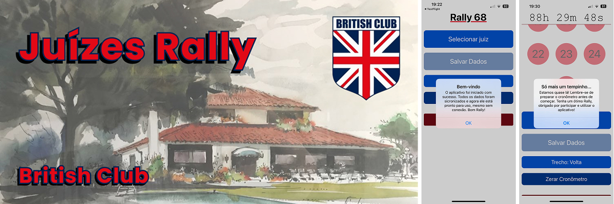

Featured project

Juizes Rally - British Club
An app to assist rally judges from the British Club of Porto Alegre. First used in April 2024.
Real-time synchronization across judges | Works offline | Simple & intuitive
Why it matters Built in React Native for efficient cross-platform development. Used in real events since launch, reducing the timing process from hours to minutes. Since then, it has been iterated and evolved significantly. It even spawned a companion web-based tool that allows judges to review and edit aggregated data from all judge apps in real-time, outputting CSV results with all timesteps and even auto-generating a PowerPoint presentation skeleton with final results (sadly, the code remains private).
Technologies React Native, Expo, TypeScript, Firebase